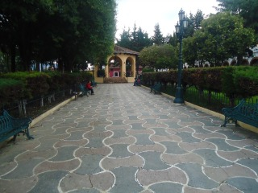
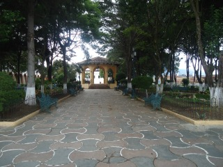
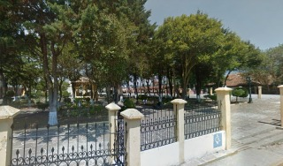
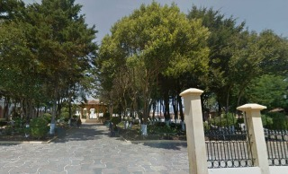
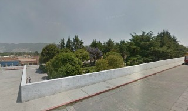

La plazuela de la merced se edificó en 1539 por los frailes mercedarios, tenía como tradición celebrar durante la feria la corrida de toros en dicha plazuela. Para este fin se construia una barrera de pino con burladeros y la sombra con techo de tejamanil, en el que habían lugares para las personas importantes.
Se encuentra ubicada en la calle Diego de Mazariegos a 3 cuadras del parque central.
Si usted se encuentra ubicado en la plaza de la paz viendo de frente hacia la catedral puede caminar hacia atrás como referencia encontrará frente a la plaza el asilo de ancianos San Juan de Dios camine sobre esa acera hasta llegar a la esquina pasando por Bancomer cruce la calle y continue caminando una cuadra mas pasando por scotiabank y al llegar a la esquina de vuelta a la derecha y camine 3 cuadras hasta encontrar la plazuela de la Merced.
En el lugar usted puede realizar actividades como:
* Fotografía
* Visita a museos
* Visita a iglesias
* Asistencia a eventos culturales
* Asistencia a eventos gastronómicos
* Asistencia a festivales de cine
* Asistencia a festivales de música
* Asistencia a festivales folklóricos
* Asistencia a fiesta popular





posicione el mouse sobre las imágenes